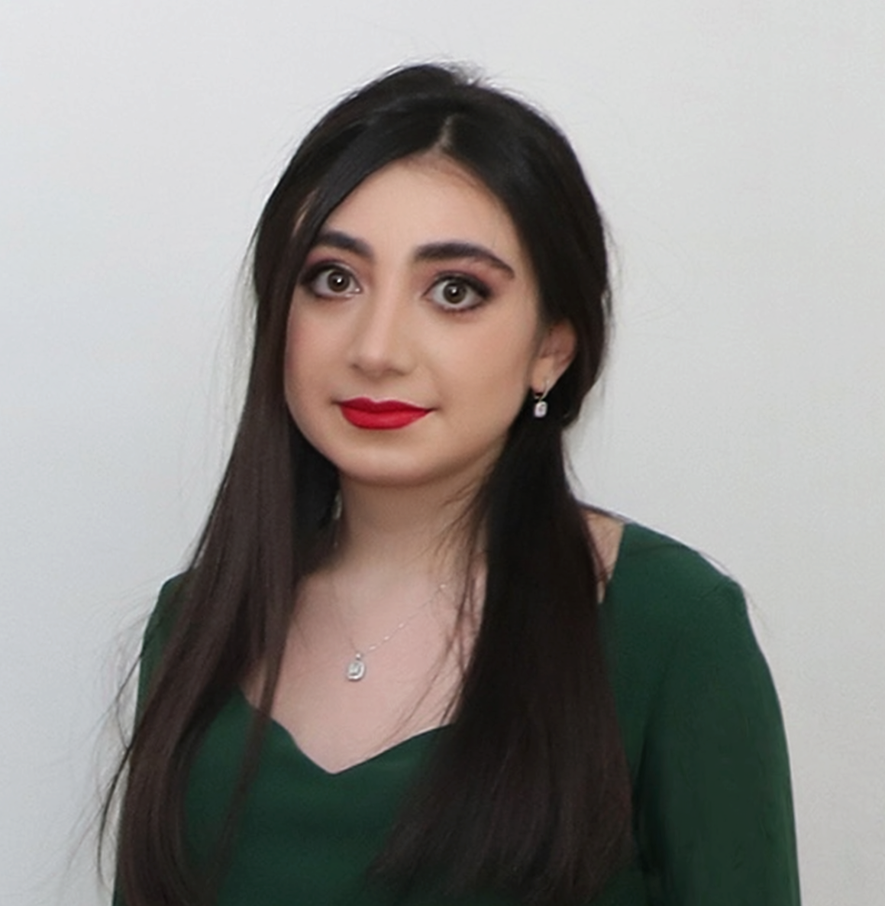

Ali Abdollahzadeh, PhD
Principal Investigator
Computational tools for microscopy, white-matter morphology, and diffusion biophysics.
Contact AliComputational Neuroanatomy Lab
Computational neuroanatomy at the A.I. Virtanen Institute, University of Eastern Finland.
Principal Investigator
Computational tools for microscopy, white-matter morphology, and diffusion biophysics.
Contact Ali
Doctoral Researcher
Machine learning, data fusion, and image and signal processing.
Visiting Researcher
Project Researcher
Intern
Whole assembloids image analysis
Interested in research opportunities or collaboration?